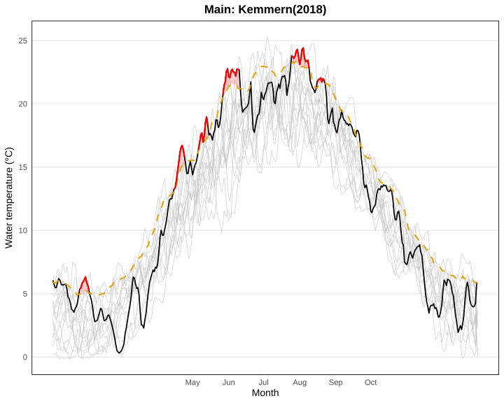
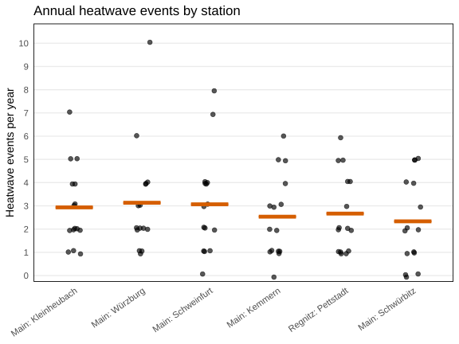
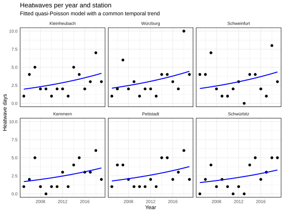
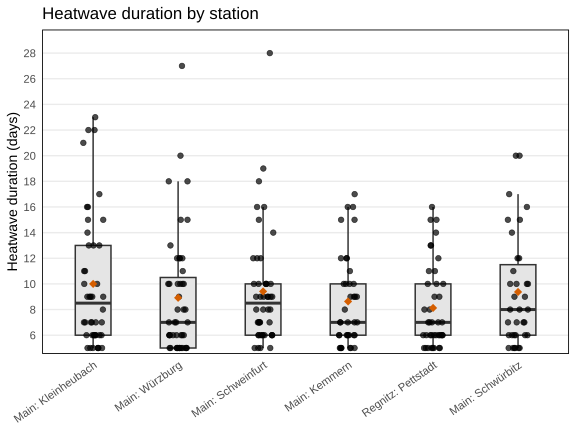
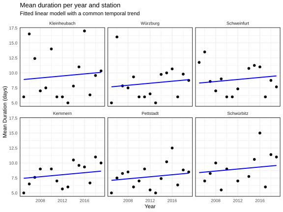
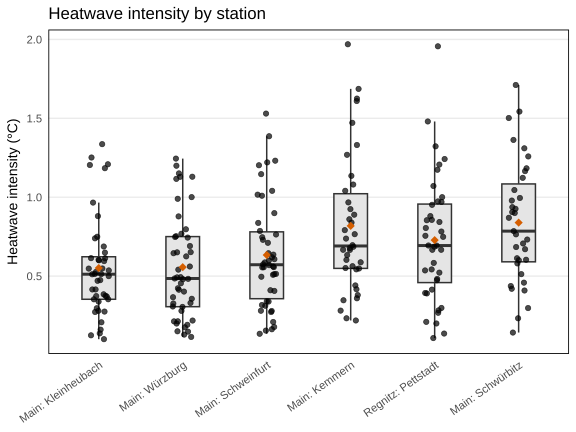
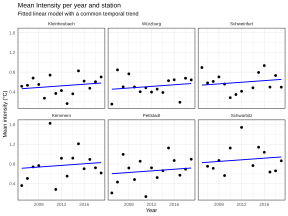
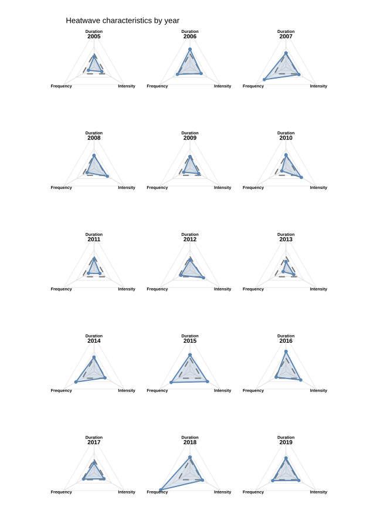
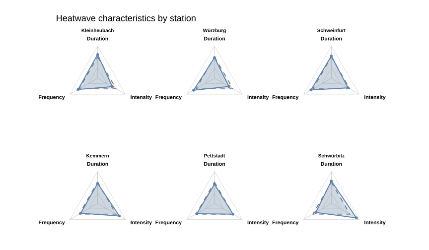

Chapter 5 Riverine Heatwaves
Author: Tom Baumann
Supervisor: Henri Funk
Degree: Bachelor
5.1 Abstract
Riverine Heatwaves, which are prolonged periods of exceptionally high water temperatures in river systems, are a hydrological phenomenon, that is expected to gain considerable importance throughout the next years, also due to their link to climate change. The following paper will give an introduction to the precise definition of riverine heatwaves, as well as explain its drivers and impacts. Furthermore, it will focus on the methodology used to detect riverine heatwaves from temperature time series, and how their development, both spatially and temporally, can be quantified. Applying these methods on a dataset from Main river system in Bavaria delivered a significant increase in frequency over time, while increasing temporal trends in duration and intensity were insignificant. Also linear trends between river kilometer and the heatwave metrics could not be verified. However, the dataset only included a relatively short time period, therefore a larger data size might lead to more precise results.
5.2 Introduction
5.2.1 Overview
In contrast to air, lake and ocean heatwaves, research on river heatwaves is still just emerging. However it is a topic that is only projected to become more relevant over time, as increasing water temperatures in rivers are closely linked to climate change, and also riverine heatwaves are expected to become more frequent, long and intense. In fact, they are even projected to increase more rapidly than air heatwaves (Sadayappan and Li 2025). To research riverine heatwaves, it is important to understand precisely how they are defined, how they can be quantified, and what sort of data is required for their analysis. Also the drivers and impacts of riverine heatwaves need to be examined, to understand their appearance, and how they can be mitigated. Lastly, it is important to be able to forecast and predict riverine heatwaves, which requires the construction of reliable models. This paper is going to give an overview on the topic of riverine heatwaves, by introducing their definition, drivers and impacts. This will be helpful, to gain a better understanding of riverine heatwaves. Furthermore it will give a baseline on how riverine heatwaves can be detected from temperature time series, and what metrics can be used to quantify them. Later these methods will be used to perform an exploratory analysis on a data set of water temperature data from Main river system, focusing on the evolution of riverine heatwaves over time and the differences between stations.
5.2.2 Definition
Riverine Heatwaves are defined similarly to atmospheric heatwaves, as periods where daily mean water temperature exceeds a local seasonally varying percentile based threshold for a prolonged period of time. For riverine heatwaves, usually a 90th percentile threshold and a 5 day period are used (Hamel et al. 2025). Although their definitions are similar, riverine heatwaves and atmospheric heatwaves behave differently, as riverine heatwaves tend to be more rare, but more persistent, than atmospheric heatwaves (Sadayappan and Li 2025).
5.2.3 Drivers
As riverine heatwaves are a phenomenon that has not gained much attention so far, its drivers are not fully understood yet. We know that river temperature in general is controlled by a variety of factors. There are the atmospheric conditions like air temperature, wind, rainfall and solar radiation, the hydrologic conditions which means the discharge, how the river interacts with different water bodies within its proximity and processes at the water stream bed interface, for example the interaction of the river with ground water. On top of that, the water temperature can be influenced by its environment, for example by the amount of vegetation and shading, by impervious surfaces nearby or by the presence of thermal effluents from near industries or human waste water (Hamel et al. 2025).
However, so far little is known on how specifically riverine heatwaves are caused. From literature we know, that riverine heatwaves are primarely driven by climate drivers. These include air temperature, while especially trends of minimum and maximum temperature play a role, and trends in low discharge. Also the contribution of groundwater, winter precipitation percentage and trends of snow water play a role, as these help to buffer the impact of extremely hot air temperatures on river temperature (Sadayappan and Li 2025). Behind climate drivers, there are also direct anthropogenic drivers, such as river dams, which typically tend to elongate riverine heatwaves (Sadayappan and Li 2025). Nevertheless, the processes that cause riverine heatwaves are still not fully understood.
5.2.4 Impacts
The appearance of riverine heatwaves can have both ecological and socioeconomic impacts. These can be parted into different layers. Firstly there are the immediate effects of prolonged periods of high water temperature. The higher temperature could lead to an increased rate of open water evaporation. Moreover, they might lead to an increased spread of diseases, harmful algee bloom and a decrease in water quality in general. This in turn can reduce the availability of drinking water or the possibility of recreational activities and be harmful to flora and fauna living in, or close by the river systems. Also the prolonged high temperatures can cause thermal stress on fish and other aquatic species (Hamel et al. 2025). Together this is threatening fishing and aquaculture which is a vital source of food for a large part of the population (Chen et al. 2026). Moreover, high water temperatures can also negatively impact energy production, as nuclear power production often relies on cooling water from close by river system, which already has been unavailable due to riverine heatwaves in some cases (Hamel et al. 2025).
5.3 Data
5.3.1 Data Set
For the analysis a dataset of longitudinal temperature data from 14 gauges at Main river system in Bavaria was used. The data set includes eight measurements of water temperature per day over a time period of 5 to 20 years between 2000 and 2020. According to the literature, the analysis of riverine heatwaves requires time series of at least 10, ideally 30 years with at least daily data and not more than 50 percent, ideally not more than 25 percent of missing data (Hamel et al. 2025) . Also for this analysis it is necessary to have a common time period for all stations, to obtain comparable results between stations. As many of the stations do not cover a common time period, and as some of the stations have a high amount of missing data for some years, the analysis was limited to six of the stations to guarantee these standards. Excluding the other stations gave us a 15 year common period time series of daily water temperature, with almost no missing values (not more than ten percent per yearly station specific time series). The used stations are marked in figure 5.1, which also shows their position along the main river system.
5.4 Methods
5.4.1 Threshold
The threshold which classifies riverine heatwaves has to be precisely defined. This paper uses the definition of marine heatwaves by Hobday. Although it was originally defined for marine heatwaves, it has since been used on many different studies about riverine heatwaves as well.
The definition of marine heatwaves by Hobday uses a 90th percentile seasonally varying threshold, which is also varying with location and therefore calculated separately for each station. To calculate the seasonally varying threshold, for each day the historical temperature measurements, as well as the historical measurements from a 11 day surrounding window are taken. From these data points, the 90 percent quantile is taken. The exact formula for this calculation is depicted below, where y is the year variable, d is the day variable and j is the day for the considered temperature (5.1). \(Y_s\) and \(y_e\) are the years that mark the beginning and end of the baseline period, \(P_{90}(X)\) is the 90 percent quantile of \(X\) . This procedure will be repeated for each day of year, until the threshold for the entire year is completed (Hobday et al. 2016).
\[\begin{equation} T_{90}(j) = P_{90}(X), \quad \text{where} \quad X = \left\{T(y,d)\;\middle|\; y_s \le y \le y_e,\; j-5 \le d \le j+5 \right\} \tag{5.1} \end{equation}\]
Usually, for this a historical baseline period is used. But since here the data set only covers a relatively short time period, the same time period was used for the calculation of the threshold and the analysis. Even if the same threshold definition is used, comparing results from different studies on riverine heatwaves has to be treated carefully. It can be problematic to compare exact numbers for metrics between studies with different baseline periods, as climate change suggests a temperature biased over time. However, as in this paper the focus is only to demonstrate how heatwaves evolve relatively to another over time by looking for general trends rather than comparing exact metrics with other studies. And since in this paper only measurements from the same stations with the same baseline period were compared, this approach also suffices.
Resulting from this procedure, for each station a threshold is obtained, that can be used for comparison with the time series of each year. In figure 5.2 an example of this is shown for the Kemmern station and the year 2018. Heatwaves can then be detected, by firstly marking all potential candidates, which are all days exceeding the thresholds. After, the time series are examined for events of at least five consecutive days exceeding the threshold. These are marked as heatwaves and given an ID, while all shorter events are discarded. When there is a gap of only one or two days between two or more heatwaves that have a duration of at least five days each, the heatwaves, are merged into one heatwave.
5.4.2 Threshold example: Main data (Kemmern, 2018)

FIGURE 5.2: Temperature time series for Main Kemmern in 2018 (black line). The dotted orage line represents the heatwave threshold for Kemmern station. The red areas mark heatwaves in that year for Kemmern station. The light grey lines represent all temperature time series of Kemmern station for the baseline period.
5.4.3 Metrics used
This paper focuses on three primary metrics, that are used to quantify the evolution of riverine heatwaves. A frequency metric, a duration metric and an intensity metric were used, to describe the evolution under different aspects.
To quantify the evolution of frequency the number of heatwave events per year is used. For this, the number of different heatwaves IDs are being counted per year and station.
Furthermore, the duration of a heatwave is considered. This is calculated using the first and last day of each heatwave (5.2) (Hobday et al. 2016). The duration plays an important role, as especially longer heatwaves can have more severe impacts.
\[\begin{equation} D = t_e - t_s \tag{5.2} \end{equation}\]
Lastly, intensity is used, to assess the amount of the heat spike. The original definition by Hobday suggests to to define it as the temperature by which the climatological mean is exceeded. However, most literature on riverine heatwaves define intensity as the exceendance of the 90th percentile threshold (Sadayappan and Li 2025) (Chen et al. 2026). Therefore this was also adopted for this paper. Also in this paper intensity is defined, as the mean of the daily temperature exceedance per heatwave(5.3).
\[\begin{equation} i_{\mathrm{mean}} = \overline{T(t)-T_{90}(j)} \tag{5.3} \end{equation}\]
These metrics can also be used to summarize two or more of these characteristics. For example, the heatwave events can be multiplied with the mean annual duration, to obtain the number of heatwave days per year. Or the duration of a heatwave can be multiplied with its mean intensity, to obtain its mean severity.
5.4.4 Research Question
This paper examines the evolution of riverine heatwaves during climate change. Therefore, its focus lies primarily on the development of the three previously defined metrics over time by posing the following questions:
How has the frequency of riverine heatwaves changed over time?
How has the duration of riverine heatwaves changed over time?
How has the intensity of riverine heatwaves changed over time?
Given the availability of stations with different locations along the same river system, it was also looked into how the metrics differ between the stations. To answer these research questions, an exploratory analysis was performed on the heatwave data, examining it for differences between stations and years. Also linear and quasi poisson modells were fitted on the data, to look for significant temporal and spatial trends.
5.5 Results
5.5.1 Frequency
Figure 5.3 shows the distribution of the number of heatwave events per year for each station, with the stations being ordered by their position along the river from downstream to upstream. The plot shows, that for each station the mean number of heatwave events lies between 2.5 and 3. Both its mean and its variance seem to slightly increase in a downstream direction. To investigate this more thoroughly, a linear model between the mean number of heatwave events per station, and the river kilometer was used. The river kilometer is a static variable that describes, the stations distance to the river mouth in kilometers. The model indicated a decreasing, however insignificant trend of -0.001935 events / year with a p value of 0.197. As Pettstadt station lies on an inflow river and not directly on Main, it was excluded from this model.
To examine the temporal trend of frequency, the heatwave events were grouped by their station, and a quasi poisson model was used, to look for correlation between the frequency and year. Fitting a model for each individual station led only to 1 significant and 5 insignificant results. Furthermore a common temporal trend quasi poisson model of frequency and year was used, to examine the general temporal frequency trend. An analysis-of-deviance F-test was used to assess whether including a year x station interaction significantly improved the quasi poisson model compared with a model containing only year and station main effects. The year × station interaction did not significantly improve model fit (analysis of deviance F-test: F(5, 78) = 0.737, p = 0.598), indicating no statistical evidence that temporal trends differed among stations.Therefore, the model with station as a fixed effect and a common temporal trend was used for the analysis. This resulted into a significant positive trend over time (slope: 0.05350, p value : 0.002), which indicates an increase of heatwave events by 5.5 % per year. The common quasi poisson is depicted in figure 5.4 where it is plotted into the frequency distribution of each station individually. The offset represents the intercept of the station effect, as the frequency of heatwaves differs from station to station.

FIGURE 5.3: Frequency distribution over all stations. The orange square signifies station mean value.

FIGURE 5.4: Temporal development of heatwave events by station. The blue line shows the common temporal trend quasi poisson model.
5.5.2 Duration
The durations of heatwaves of Main river in the considered period lay between 5 and 28, with averages between 8 and 10 days. Again the stations were placed according to their order along the river, and while the mean stays consistent, the variance seems to increase downstream 5.5. Also extremely long heatwaves seem more common at the downstream stations. Again there was a model fitted between the mean duration of each station and the river kilometer, this time a linear model was used, however it showed no significant trend (slope: -0.002058 days / km, p value: 0.459). Another idea would be to examine the mean of the yearly maximum duration of each station and look for a downstream trend. However, for this data set, this approach also did not deliver a significant result (slope: -0.002475 days / km, p value: 0.616 ).
For the temporal trend a similar approach was used. The yearly mean durations for each station were plotted 5.6, and for each a linear model was fitted. Four of the six stations showed a positive trend, with only one of them being significant, while the other stations showed a insignificant negative trend. To fit a linear model for the common temporal duration trend, again the model with year x station interaction was tested against the model including only the main effects, analogously to the frequency trend, this time using a analysis of variance F-Test. Again there was no indication for significantly differing trends between station, therefore the model with only the main effects was chosen. This resulted in a increasing, however insignificant, temporal trend of duration (slope: 0.08490 days / year, p value: 0.217).

FIGURE 5.5: Distribution of mean duration for all stations. Each point signifies a single heatwave. The orange square signifies the average duration per station.

FIGURE 5.6: Temporal development of mean heatwave duration by station. Each point signifies the annual mean duration for the considered station. The blue line shows the common temporal trend linear model.
5.5.3 Intensity
The intensity lies between 0 and 2 degrees celsius over the threshold, with the stations means laying between 0.5 and 0.8 degrees Celsius. Again the plot 5.7 suggests a trend between the location of the stations, it seems like the mean intensity and its variance decrease stream downwards. To capture this trend, a linear model was used, which gave a slope of 0.0011531 °C per km, however again this result was not significant for the 95 percent confidence level with a p value of 0.059.
Looking at the yearly data 5.8, the plots again reflect the higher variance for upstream stations Schwürbitz, Schweinfurt and Kemmern, however a clear temporal trend is not visible. Also neither the station specific linear models, nor the common temporal trend model showed a significant trend. The result of the common model was a slope 0.008265 °C per year with a p value of 0.187, while the individual models showed no significant trend for any of the stations. The common temporal trend model was fitted and tested analogously to the model for duration.

FIGURE 5.7: Distribution of heatwave intensity by station. Each point represents the intensity of one heatwave. The orange square signifies the mean heatwave intensity for each station

FIGURE 5.8: Temporal development of mean heatwave intensity by station. Each point signifies the annual mean heatwave intensity for the considered station. The blue line shows the common temporal trend linear model.
5.6 Discussion
5.6.1 Overview of trends common models

FIGURE 5.9: All three heatwave metrics by year. Values are expressed relative to the mean across years (1.0 = overall mean); the dashed grey triangle indicates the overall mean.
The observed results of all three metrics are summarized for the temporal trends in figure 5.9 and for the differences between stations in figure 5.10. From the literature a increasing trend over time for all three metrics would be expected (Chen et al. 2026) (Sadayappan and Li 2025). This analysis only reflects a significant increasing trend for frequency, while duration and intensity also show increasing, but insignificant trends. However, the recommended data size of time series with a length of ideally at least 30 years were not met, as only a period of 15 years was considered. Also there was no historical period used to calculate the heatwave threshold. This might explain the insignificance of the duration and intensity trend. Moreover, only data from one river was considered, and a trend of one river does not necessarily match the global trend of riverine heatwave increase. With a longer time series it might be possible to obtain significant results for the temporal trends of duration and intensity, or it might be possible to have a larger confidence that there is no significant temporal trend for these metrics in Main river system.
However, finding usable data for the analysis of riverine heatwaves is difficult, as due to the suspected climate change bias it is not always reasonable to use a long period of historical data as a baseline. With the temperatures being in general a lot higher than in the past, a historical threshold would not be able to capture heatwaves anymore, as a too large amount of temperatures would exceed it. Leading to permanent heatwave states, which would make the examination of frequency and duration meaningless, and a temporal trend would not be able to be detected. An idea to account for the temporal bias in temperature data would be to use simulated data. By using simulated data, longer time series could be used, the climate change bias would be incorporated in the threshold calculation, and predictions for future development of riverine heatwaves would be possible.

FIGURE 5.10: All three heatwave metrics by station. Values are expressed relative to the mean across all stations (1.0 = overall mean); the dashed grey triangle indicates the overall mean.
The plots indicated, that there was a correlation between frequency and intensity and the river kilometer. The implication was, that the frequency of heatwaves increase downstream ward, while their intensity decreases. These trends however could not be verified using linear models, which did not deliver significant results. However, it could be interesting to perfom further examinations on this trends, using longer time series, or a larger number of stations along the same river, maybe also on a different river with a denser network of gauges. The frequency trend might indicate, that there is a downstream movement of riverine heatwaves, that might explain the higher frequency downstream wards. This could be interesting to make predictions on the appearance of heatwaves downstreams, after one has appeared further upstream.
The results, in a way, show the difficulties of data scarcities when working on temporal trend analysis with riverine heatwaves during climate change. This underlines the importance of constructing a dense network of temperature data, perhaps with the help of simulated data. Although a significant temporal trend was only detected for frequency, there were some implications for increasing trends from the other metrics, which, as potential trends between the river kilometer and frequency and intensity, might be an interesting relation to examine in a larger data set. In conclusion riverine heatwaves remain a relevant phenomenon, during climate change, that still offers many interesting research possibilities.